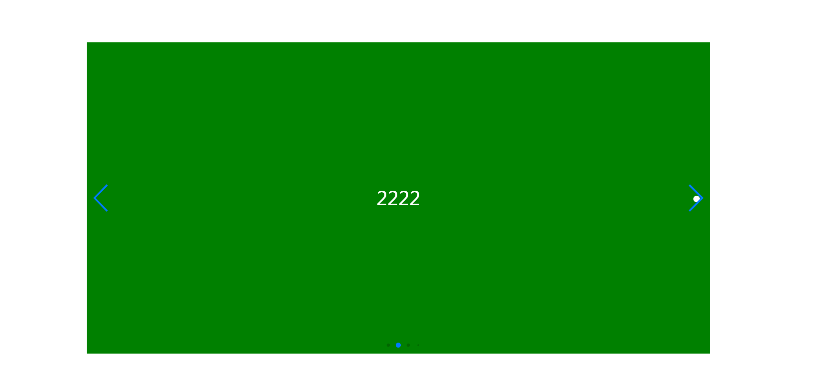

<!DOCTYPE html>
<html lang="zh-CN">
<head>
<meta charset="UTF-8" />
<title>独秀不爱秀</title>
<link rel="stylesheet" type="text/css" href="swiper/css/swiper.css">
<style type="text/css">
* {
margin: 0;
padding: 0;
}
.swiper-container {
width: 1000px;
height: 500px;
margin: 100px auto;
background-color: green;
}
.swiper-slide {
font-size: 30px;
text-align: center;
line-height: 500px;
color: #fff;
}
</style>
</head>
<body>
<div class="swiper-container">
<ul class="swiper-wrapper">
<li class="swiper-slide">1111</li>
<li class="swiper-slide">2222</li>
<li class="swiper-slide">3333</li>
<li class="swiper-slide">4444</li>
<li class="swiper-slide">5555</li>
<li class="swiper-slide">6666</li>
<li class="swiper-slide">7777</li>
</ul>
<!-- 分页器 -->
<div class="swiper-pagination"></div>
<!-- 导航按钮 -->
<div class="swiper-button-prev"></div>
<div class="swiper-button-next"></div>
</div>
<script src="swiper/js/swiper.js"></script>
<script type="text/javascript">
// 初始化Swiper
var mySwiper = new Swiper('.swiper-container', {
// 循环轮播
loop: true,
// 分页器
pagination: {
el: '.swiper-pagination',
// 动态分页器：当你的slide很多时，为true后，分页器会有大小显示
dynamicBullets: true,
},
// 前进后退按钮
navigation: {
nextEl: '.swiper-button-next',
prevEl: '.swiper-button-prev',
},
// 自动轮播
autoplay: {
delay: 3000,
/**
* stopOnLastSlide => true: 当切换到最后一个slide时停止自动切换
*/
stopOnLastSlide: true,
/**
* disableOnInteraction：用户操作swiper之后，是否禁止自动轮播
* true(默认) => 停止
* false => 恢复自动轮播
*/
disableOnInteraction: false,
}
});
</script>
</body>
</html>
其他额外参数请参考中文文档。